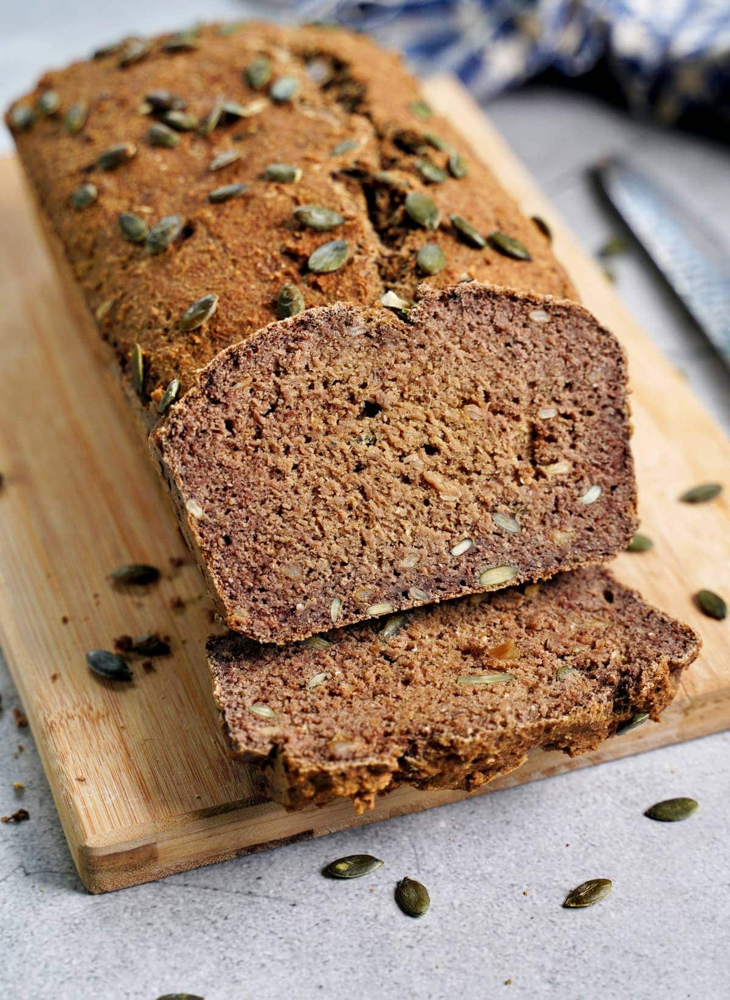

Lentils Bread

Description
Innovate with this nutritive lentils bread (without flour!) that goes excellent as your sandwich bread!
Ingredients
- Lentils: 1 cup
- Eggs: 2
- Oil: 5 spoons
- Baking powder: 1 tea spoon
- Salt, nuts or seeds, seasonings to taste
Steps
- Soak the lentils overnight.
- Blend all the ingredients together.
- Preheat the oven at low fire.
- Pour the mixture into an oiled baking pan. Spread more seeds on top of it.
- Bake for 30 minutes at low fire.
- Enjoy!